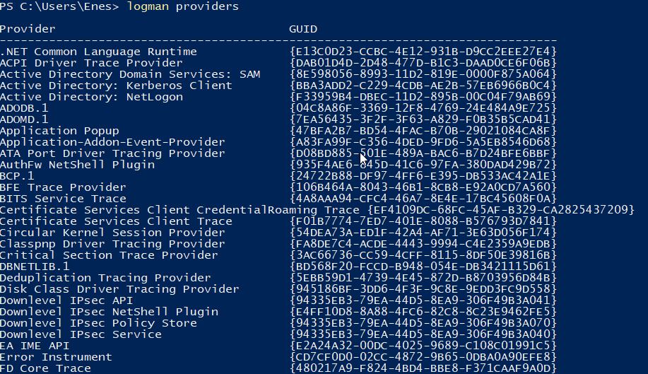
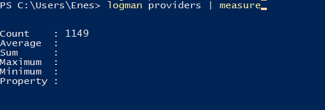
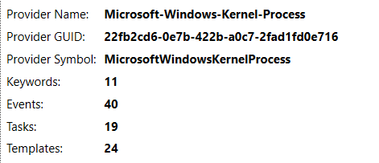
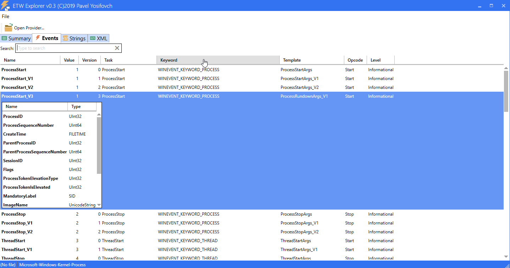
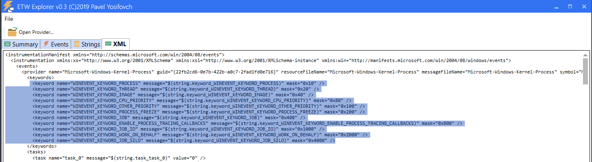
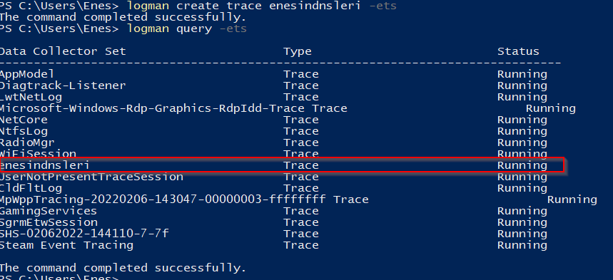
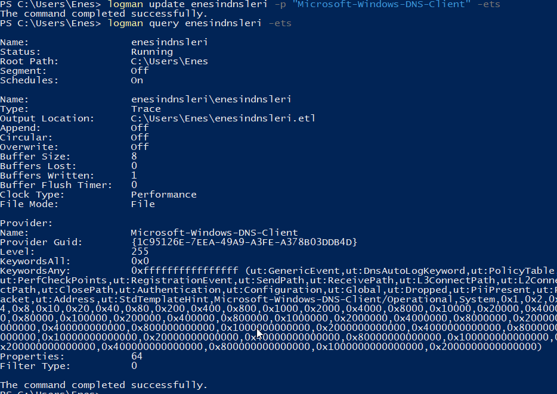
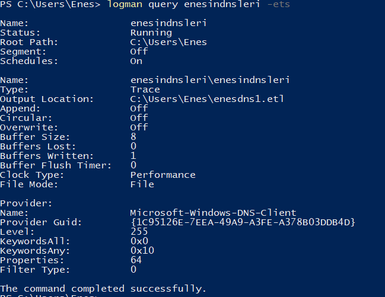
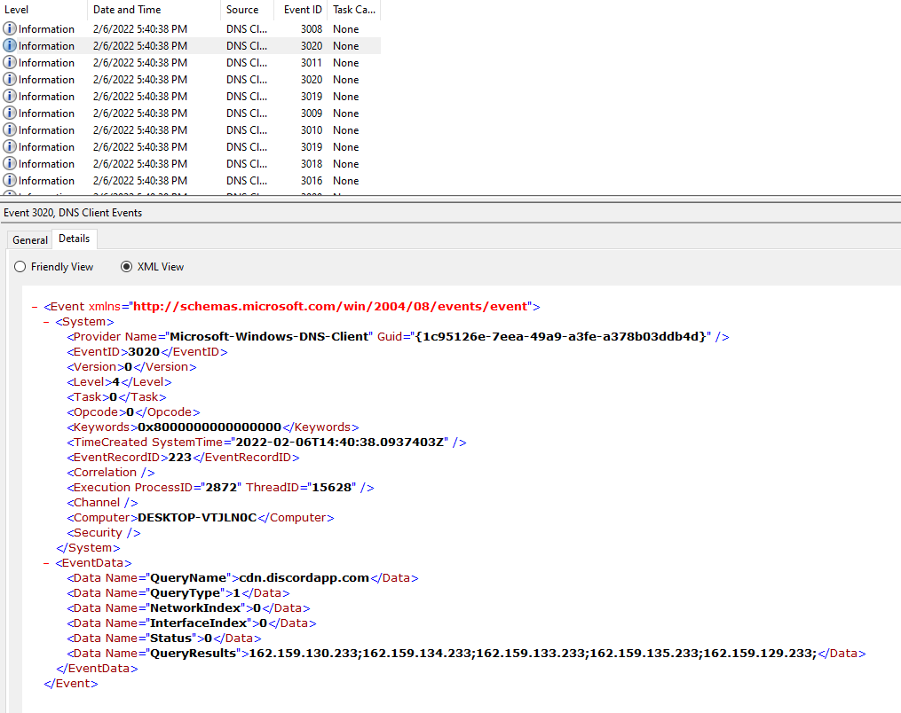
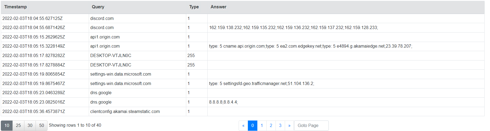

Ferrarisini satan ETW (Event Tracing for Windows)
Written on
Satan kelimesinin gizli bir anlamı yoktur tıpkı araç plakamın sonunun 666 olması gibi.
Selamlar öncelikle. Nasılsınız? Her telden çalan bir insan olduğum için bugün de (1 yıl sonra) tamamen farklı bir konu üzerinden bahsetmek istiyorum. Kendisini çeşitli mail listelerini takip ederken tanıdım. İlgimi çekti ve araştırıp bunun yazısını yazmak istedim. Birbirimizi sevebileceğimizi umuyorum.
İş bu blog konusu size hiç bir uzmanlık vermeyecektir, vermeyi tahahhüd etmemektedir. Türkiye piyasasında bir kaç kişi/grup harici genelde teknolojiyi takip eden tarafta olduğumuz için(keşke Numan olsam :D) pek tabii internette okuyup özetini çıkarttığım bilgileri sizlere sağlamış olacağım diye düşünüyorum.
O zaman giriş yapalım. Kağan'dan önce yazmak için bazı konuları atlamış, kaçırmış olabilirim. Affınıza sığınıyorum. (Ulan bir blog konusu yazıyorsun bari bir şeyleri tam yap diyenleri şuraya alalım. )
ETW Ne Demekti? Sevgi demekti, Emek demekti.
Kendisinin açılımı Event Tracing For Windowstur. Kendisi çekirdekteki veya uygulama tanımlı olayları log dosyası veya real time olarak takip etmenize olanak sağlayan verimli bir yöntemdir. Kendisi/kendileri sistemi yeniden başlatmadan tracing'i(takip, izleme) aktif veya pasif hale getirebilmenize olanak sağlayabilen oldukça kullanışlı(Belki de tehlikeli) bir özelliktir.
Kıymetlilerimiz 3 ana parçaya sahiptir. Bunlar:
- Controller: İzleme başlatabilen, etkinleştirebilen, devre dışı bırakabilen uygulamalardır.
- Providers: Log oluşturan uygulamalar vs.
- Consumers: Providerlar tarafından loglari, aktiviteleri dinleyen abone(??) olan uygulamalardır.
Bu 3 madde harici ayrıca bilmemiz gereken bazı keyword(anahtar terimler) de var tabii.
- Tracing Session: Bir veya birden fazla providerdan gelen olayları kaydeden mekanizmadır/uygulamadır.
- Keywords: Consumerlara bilgiyi sağlayan olay türleridir. Burası önemli.
ETW üzerinde çok önemli 2 fonksiyon bulunmaktadır. Bunlar: 1.NTTraceControl(Trace fonksiyonlarını yönetiyor) 2. NtTraceEvent (Aktiviteleri/Eventleri yazıyor.)
NTSTATUS
NtTraceControl (
ULONG FunctionCode,
PVOID InBuffer,
ULONG InBufferLen,
PVOID OutBuffer,
ULONG OutBufferLen,
ULONG *ReturnSize);
NTSTATUS
NtTraceEvent (
HANDLE TraceHandle,
ULONG Flags,
ULONG FieldSize,
PVOID Fields);
Bu kadar teori yeter. Şimdi biraz da pratik kısmına bakalım.
ETW Providerları Görmek
Sisteminiz üzerindeki providerları görebilmek için sistem üzerinde komut istemcisine(command prompt, powershell vb.) logman providers yazdığınızda sistem üzerinde zibilyon tane provider görebilirsiniz. Ben PowerShell üzerinde measure dediğimde 1149 tane provider görüyorum.


İlk ekran görüntüsündeki çıktıda GUID'leri görüyoruz. Bizim için asıl önemli olanlar bunlardır. Bir provider'a subscribe(kayıt/abone/hook ne derseniz artık) olurken kullanacağımız keywordleri bu GUID'i sorgulayarak yapacağız. Pek tabii bu providerları tek tek terminal üzerinden kontrol etmek istemeyebilirsiniz. Bunun için geliştirimiş bazı araçlar bulunmaktadır. Ben genel olarak makalelerde "EtwExplorer" kullanıldığını görmekteyim. Aşağıda ekran görüntülerini ekliyor olacağım.



Burada işaretli alan oldukça önemli. Microsoft-Windows-Kernel-Process Provider'ına ait template'i XML biçiminde görüyorsunuz. Subscribe olduğumuzda işaretli alandan nelere subscribe olacağımızı seçeceğiz. Bu kısımda verdiğimiz değerler toplama olarak gidiyor bu arada. Mesela "0x10, 0x20, 0x40"a subscribe olacağımızı düşünrsek 0x70 yazabiliriz.
Uygulamayı geliştiren Pavel abimize saygılar. Kendisi Windows SysInternals kitaplarının yazarı olmakla birlikte Pentester Academyde de eğitmenlik yapmış birisi. Daha fazlasını öğrenmek isterseniz size kalmış araştırabilirsiniz.
ETW üzerinde Subscribe Olmak
Şimdi işimize uygun olan provider'ı seçtik diyelim. Bu provider'a subscribe olmak için bizim bir trace sessiona ihtiyacımız var. Bu sebeple logman üzerinden bu session'ı oluşturmalıyız. Varolan sessionları listelemek için aşağıdaki komutu yazabilirsiniz.
logman query -ets
Hadi bir trace session oluşturalım.
logman create trace enesindnsleri -ets
Şimdi bunu yazdığımızda aşağıdaki sonuca erişmiş olmamız lazım.

Ama şu an tamamen kullanışsız çünkü herhangi bir provider'a subscribe olmadık. Ben sistem üzerindeki DNS çağrılarımı görmek istiyorum. Çağrıdan kastım DNS istekleri. Bunun için önce hangi provider olduğunu bulmam lazım.
logman query providers | Select-String "dns"
yazdığımda bana
{1C95126E-7EEA-49A9-A3FE-A378B03DDB4D} GUID'sini verdi. Ben buna subscribe olacağım. Herhangi bir keyword vermeyeceğim bu sebeple direkt olarak aşağıdaki gibi bir komut çalıştırarak benim trace session'ıma provider'ı subscribe edeceğim. Dilerseniz siz fazladan/başka providerlar da ekleyebilirsiniz.
logman update enesindnsleri -p "Microsoft-Windows-DNS-Client" -ets
Bakalım subscribe olabildik mi?
logman query enesindnsleri -ets
Çıktımız:

Burada kendisi bir output belirledi ve keyword olarak All olarak algıladı fakat .etl dosyamda nedense hata verdi. Bende bu sebeple şöyle bir yola gittim. Siz de dilerseniz output çıktısını değiştirebilirsiniz. Daha fazlası için
logman update enesindnsleri -ow -o C:\Users\Enes\enesdns1.etl -p "Microsoft-Windows-DNS-Client" 0x10 -ets

Şimdi bir de çıktı dosyamıza bakalım.

Gördüğünüz gibi arkada Discord açık olduğu için Discord'un CDN sunucuları için bir DNS sorgusu atmışım. Pek tabi bu görüntüler takip açısından çok verimli değil ama bu kısımda Velociraptor kullanabilirsiniz. Bununla ilgili bir linki kullanabileceğiniz kaynaklar altına ekleyeceğim. Daha doğrusu tam halini ekleyeceğim.

Velociraptor VQL'i:
SELECT System.TimeStamp AS Timestamp,
EventData.QueryName AS Query,
EventData.QueryType AS Type,
EventData.QueryResults AS Answer
FROM watch_etw(guid="{1C95126E-7EEA-49A9-A3FE-A378B03DDB4D}")
WHERE System.ID = 3020
Peki şimdi işin bu kısmını hallettik diyelim. Bu ne işimize yarayacak? Bununla ilgili gördüğüm örnekler:
- USB Provider'ını kullanarak keylogger
- ETW kullanarak uygulamalarınızı gizleme
- Enumeration/Cihaz keşfi sırasında WMI'a nazaran daha az görünürlük. (Tespit edilememe)
- AV? AV Bypass
- .NET Developerlar için uygulama performans analizi
konularına odaklanmış gibiydi. Benim de yeni öğrendiğim bir konu ve terim oldu. Hatta bu zamana kadar ETW'yi hiç duymamıştım. Ufkunuz açıldıysa ne mutlu bana!
İlgili maddelerle alakalı kullanabileceğiniz, detayına inebileceğiniz veya bu bana yetmedi dediğiniz yerlerde aşağıdaki linkleri kullanabilirsiniz.
- Keylogging
- Keylogging[1]
- Source code for Keylogger
- Velociraptor Event Tracing For Windows
- Sysmon and ETW for so Much More
- Enumeration
- Blackhat Blind EDR
- Sharpsploit tarafından ETW kullanarak nasıl Evasion yapıldığını görmek için
- Yine ETW kullanabilen bir Framework
Bir klasik olarak yazı sonu şarkısını da aşağıya ekliyor olacağım.

Referanslar: